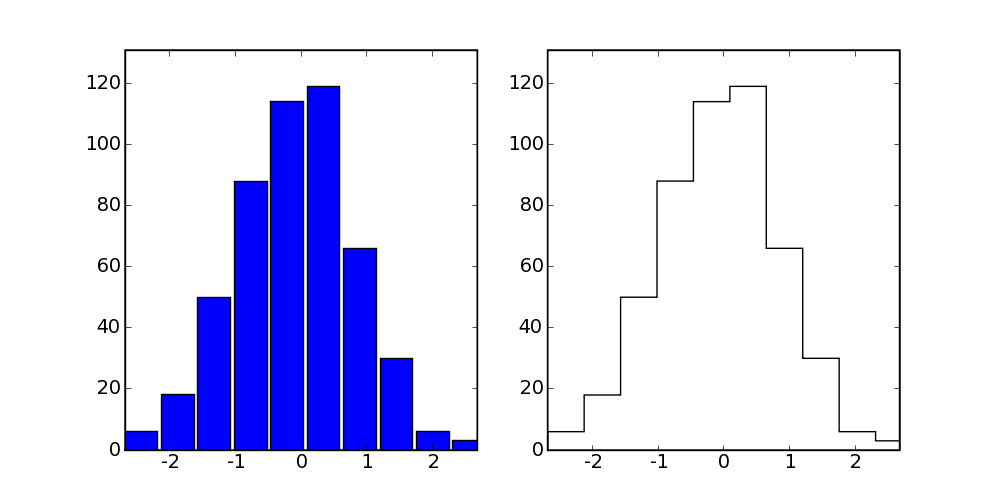

Here’s some template code for plotting histograms that don’t look like bar charts, but instead have only outlines (like IDL creates).
First define a function that does the bulk of the heavy lifting.
import numpy as np
def histOutline(dataIn, *args, **kwargs):
(histIn, binsIn) = np.histogram(dataIn, *args, **kwargs)
stepSize = binsIn[1] - binsIn[0]
bins = np.zeros(len(binsIn)*2 + 2, dtype=np.float)
data = np.zeros(len(binsIn)*2 + 2, dtype=np.float)
for bb in range(len(binsIn)):
bins[2*bb + 1] = binsIn[bb]
bins[2*bb + 2] = binsIn[bb] + stepSize
if bb < len(histIn):
data[2*bb + 1] = histIn[bb]
data[2*bb + 2] = histIn[bb]
bins[0] = bins[1]
bins[-1] = bins[-2]
data[0] = 0
data[-1] = 0
return (bins, data)
Now we can make plots:
# Make some data to plot
data = randn(500)
figure(2, figsize=(10, 5))
clf()
##########
#
# First make a normal histogram
#
##########
subplot(1, 2, 1)
(n, bins, patches) = hist(data)
# Boundaries
xlo = -max(abs(bins))
xhi = max(abs(bins))
ylo = 0
yhi = max(n) * 1.1
axis([xlo, xhi, ylo, yhi])
##########
#
# Now make a histogram in outline format
#
##########
(bins, n) = histOutline(data)
subplot(1, 2, 2)
plot(bins, n, 'k-')
axis([xlo, xhi, ylo, yhi])
Here you can find this functionality packaged up into .. image:: Matplotlib(2f)UnfilledHistograms_attachments/histOutline.py
